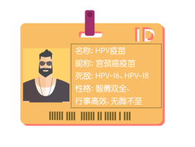
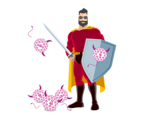

真爱难寻？蓦然回首，Mr Right就在这里！
@亲爱滴中国女性：
在这个爱情不容易被相信的年代里，找个体贴又安全感爆棚的伴侣，或许是很多人心中的美梦。但其实，真爱根本不难寻！最近就有一个不仅男友力爆棚，还能为你撑起一把保护伞的他，正在等待你的召唤。
他的大名叫——HPV疫苗！

他的男友力，是一种智勇双全的体现。在世界卫生组织推出的一系列降低宫颈癌发病率和死亡率的措施中，他绝对是战斗力最强的。
他的智慧，让他始终都能最懂你。他深知，导致宫颈癌的HPV病毒有很多种，但在中国，HPV-16和HPV-18才是最常见的女性杀手。因此，攻克这两种病毒成为了他毕生的追求，对宫颈癌高达84.5％的预防率是他对你做出的承诺。

在凶手还未来到时，你就离不开他的呵护。他能为你提前搭建起高效的免疫系统，抵御战火侵袭。当然，也只有他的“火眼金睛”才能识别出那些正在靠近你的威胁，并以93.2％的效力保证你的健康。
即便是其他的杀手在蠢蠢欲动，他也不会充当吃瓜群众，毕竟为你撑起一把全方位的保护伞，才是他的终极目标。除了HPV-16、HPV-18之外，他也同样对HPV31、33和45具有杀伤力。

假如凶手已经悄然袭击，那么他会化身为强大的补救力量，为HPV检测结果持续阳性、宫颈上皮内瘤变的患者提供临床保护。
他的出现，无疑就是在向肿瘤君呐喊“滚蛋吧！”
要知道，没有他的日子，可能危险重重。脱离了他无微不至的保护后，各路HPV病毒就有了趁虚而入的机会，一经感染，发病率位居世界第二的宫颈癌就会向你靠近。
因此，女生、女神和女王们，如此全心全意守护你的他，是你不容错过的Mr Right！刻不容缓地与他相爱相生，就能从此过上健康幸福的生活。
Refs:
1.WHO。综合控制宫颈癌：一项基本实践指南，2014
2.Chen W, Zheng R, Baade PD, et al. Cancer statistics in China, 2015. CA Cancer J Clin. 2016 Mar-Apr;66(2):115-32.
3.de Sanjose S, Quint WG, Alemany L, et al. Human papillomavirus genotype attribution in invasive cervical cancer: a retrospective cross-sectional worldwide study. Lancet Oncol. 2010 Nov;11(11):1048-56.
4.Chen W, Zhang X, Molijn A, et al. Human papillomavirus type-distribution in cervical cancer in China: the importance of HPV 16 and 18. Cancer Causes Control. 2009 Nov;20(9):1705-13.
5.Wheeler CM, Castellsague X, Garland SM, et al. Cross-protective efficacy of HPV-16/18 AS04-adjuvanted vaccine against cervical infection and precancer caused by non-vaccine oncogenic HPV types: 4-year end-of-study analysis of the randomised, double-blind PATRICIA trial. Lancet Oncol 2012; 13: 100-10.